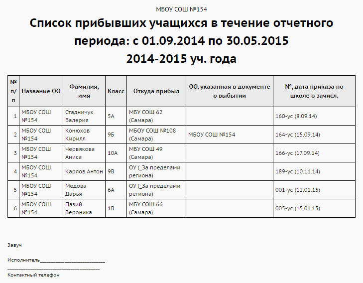

Отчет "Список прибывших учащихся"
Этот отчёт предоставляет данные о прибывших учащихся за выбранный временной интервал
Данный отчёт ориентируется на даты соответствующих приказов о движении в Книге движения учащихся.
Графа "ОО, указанная в документе о выбытии" может отличаться от графы "Название ОО": это вызвано тем, что после выбытия ребёнок попадает в список выпускников и выбывших, из которого его может принять любая ОО, - не обязательно та, куда он выбыл согласно приказу о выбытии.
Данный отчёт, кроме учащихся, зачисленных в классы, также учитывает учащихся, прикреплённых к параллели (если таковые есть в школе).
Пример отчёта:

Как получить движение за летний период?
Если требуется список выбывших (прибывших) за летний период, например, между 1.06.2015 и 5.09.2015, то чтобы получить отчет, нужно сначала выбрать 2014/15 учебный год в разделе "Персональные настройки". Если выбрать 2015/16 учебный год, то отчёт будет пустым. Это связано с тем, что документы о
движении привязываются в системе к определенному учебному году, и приказы о выбытии (прибытии) за лето привязаны к предшествующему учебному году.